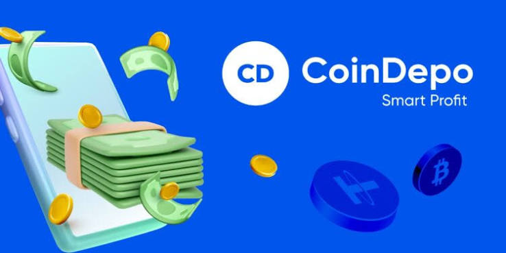

La infraestructura de B.A.S. está compuesta por tres engranajes core operando en perfecta sinergia. Cada motor cumple una función específica y se integra con los demás para formar un bucle continuo.

MOTOR 2 COINDEPO Colateraliza y genera rendimientoEl sistema está diseñado para operar sin intervención constante, sin apalancamiento o apalancado, y sin exposición a liquidaciones forzosas.
El primer motor es Gomining, encargado de producir
Bitcoin nativo mediante potencia de minado real (Hashrate).
El usuario adquiere potencia de minado en forma de Terahashes (TH). El TH produce fracciones de Bitcoin diariamente de forma automatizada.
El Bitcoin producido se transfiere directamente a COINDEPO (Motor 2).
La tenencia del token GOMINING mejora el nivel de descuento en costes de electricidad y mantenimiento y permite obtener rendimientos de +-20% de APR y poder de voto.
El segundo motor es Coindepo, encargado de multiplicar el Bitcoin producido por Gomining. El Bitcoin depositado no se queda estático: genera rendimiento diario y actúa como colateral para obtener préstamos en USDT sin vender el activo base.
Custodia del Bitcoin producido. Genera rendimiento diario y sirve como colateral para préstamos.
Genera rendimiento diario, sirve como colateral para préstamos, se usa para pago de intereses de los préstamos y compra de más TH en Gomining.
Para blindar el sistema contra caídas del mercado, no superar el 50% de LTV.
Adquirir más TH en GOMINING, aumentando la producción base.
La tenencia del token COINDEPO mejora el nivel de fidelidad y permite obtener mayor porcentaje en rendimientos y mejores condiciones en los intereses de los préstamos, asi como poder de voto..
El tercer motor es MEXC, encargado de generar liquidez estable en monedas estables (USDT) mediante trading spot y/o futuros de alta eficiencia. Su objetivo es producir flujo de caja de forma repetible, con bajo riesgo de liquidación y sin necesidad de monitoreo manual continuo.
Actualmente se opera en MEXC, pero el protocolo es compatible con cualquier CEX o DEX apropiado.
Destinado a la cuenta diaria de USDT para el pago de intereses de los préstamos.
Destinado al aumento de capital de la cuenta de trading.
El Motor 3 se ejecuta a través de dos estrategias que puedes consultar en detalle.